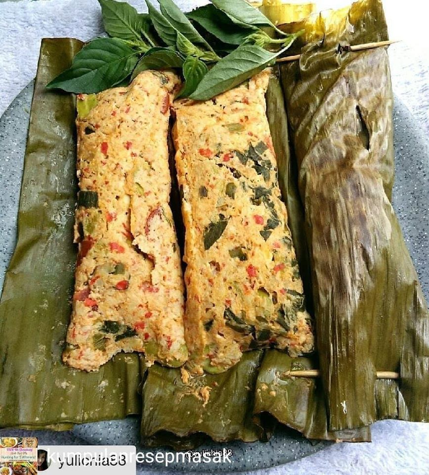

Pepes Tahu Udang
Bahan-bahan
- 200 gram udang kupas
- 1 buah tahu putih (350 gr)
Bumbu Halus
- 70 gr bawang merah
- 20 gr bawang putih
- 30 gr cabe keriting
- 20 gr cabe rawit
- 70 gr tomat
- 20 gr kemiri sangrai
- 1 ruas jahe
- 1 ruas lengkuas
- 1 ruas kunyit
- 2 lbr daun jeruk
- 1 sdt ketumbar bubuk
- 1 sdm peres garam
- 1/2 sdm gula pasir
- 1/2 sdt kaldu bubuk
Cara Membuat
-
Blender semua bumbu hingga halus. Masak di atas kompor hingga air
menyusut. Masukkan tahu dan udang, aduk rata.
-
Panaskan kukusan. Alasi wadah dengan daun pisang. Masukkan pepes
ke dalam kukusan dan kukus hingga matang.
- Angkat dan sajikan.
Selamat mencoba!